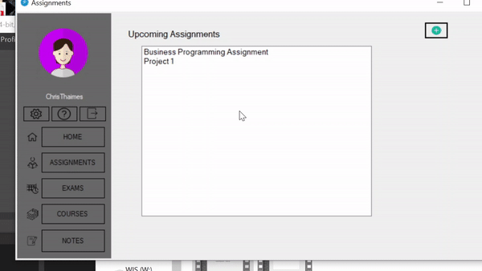
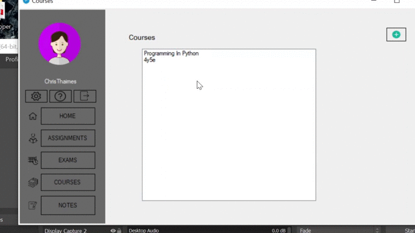

Login
If you do not have an account, click the CREATE ACCOUNT button in the top right corner
- To login, Enter your username and password correctly, and click Sign In.
- If you do not have an account, click the CREATE ACCOUNT button in the top right corner
Below you can see an example of a login
Sign-Up
- You must fill out every text box on this page in order to create your account and ensure you have an avenue to recover your account in case you forget your login details.
- Please make every effort to choose a username and password you will most definetlely remember as we do not have a robust and reliable "forgotten password" system set up as yet.
- Once you are finished signing up, the application will take you to the login page, where you will use your sign up details you just entered, to login.
Signing Up

Forgotten Password
In the event that you forget your username or password, please email us at "itsketastix@gmail.com" with a guess of your username, the email address you signed up with, and your full name.
Dashboard
- This is where you are able to see all your important details.
- From here you can navigate to your Assignments, Notes, Exams or Courses to view, add update or delete items.
Navigation
- Navigation is made very simple with this application. It works with a simple point and click mechanic
- The grey menu bar on the left, contains all that you need to navigate throughout the application and is included in every section of the app.
- To go to your Notes, Courses, Assignments or Exams from anywjere in the app, simply click the button which corresponds to your intended destination.
- To close the application, Click the "X" in the top right corner and select "Yes"
Settings
This application does not yet have any change settings functionality. This part of the Help Page will update once a settings page has been added.
Assignment
- When entering information for your Assignments, refrain from entering any of these characters (",',*,&,^,%,$,#,@,!)
- Adding an Assignment - Click the green plus button and enter the relevant details
- Viewing an Assignment - Click which Assignment you would like to view
- Update an Assignment - Click which Assignment you would you would like to update, click the button with the two blue arrows and change the details as you see fit.
- Delete an Assignment - Click which Assignment you would like to delete then click the red trash button

Course
- When entering information for your courses, refrain from entering any of these characters (",',*,&,^,%,$,#,@,!)
- Adding a Course - Click the green plus button and enter the relevant details
- Viewing a Course - Click which course you would like to view
- Update a Course - Click which Course you would like to update, click the button with the two blue arrows and change the details as you see fit.
- Delete a Course - Click which Course you would like to delete then click the red trash button

- Completing a Course - If you have completed a particular course, you may click update, and enter the grade you got into the Final Grade text box
Exam
- When entering information for your Exams, refrain from entering any of these characters (",',*,&,^,%,$,#,@,!)
- Adding an Exam - Click what date your exam falls on, if you have an exam on that date already, you must click "NO" in the message box and proceed. Enter the relevant details and hit Save
- Viewing an Exam - Click whichever date you would like to look at. If the date is bold, that means an exam is on that date.
- Update an Exam -
- Delete an Exam - Click on the Date that the exam was/is scheduled, click the Exam you would like to delete then click the red trash button
Note
- When entering information for your Notes, refrain from entering any of these characters (",',*,&,^,%,$,#,@,!)
- Adding a Note - Click the green plus button and enter the relevant details
- Viewing a Note - Click whichever Note you would like to view on the Notes Page
- Update a Note - Click which Note you would like to update, click the button with the two blue arrows and change the details as you see fit
- Delete a Note - Click the Note you would like to delete then click the red trash button
Logout
Click the Logout Button under your user name on the left